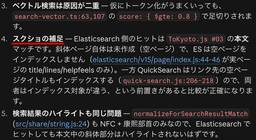
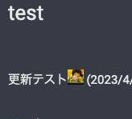
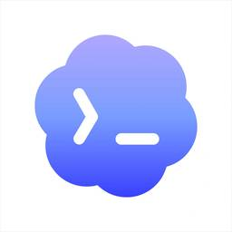

橋本商会 - Cosense
https://scrapbox.io/shokai
shokai / 階層整理型WiKiはスケールしない / 発表資料 / Scrapboxをグループでどう使っていくか？ / ServiceWorkerとCacheによるSPAの高速化、オフラインモード / 文芸的データベース - 文書の作成とそのデータベース化を同時に行なう手法 / PDEConf2026 / 熟練者と同等のCosense読み書きを実現するハーネスとAgent Skill / To
フィード

PDEConf2026
橋本商会 - Cosense
https://product-engineering.jp/2026/『止めない』を設計する — 制約の中で、事業の根幹を支える判断 UPSIDER 与信、銀行連携現場に行くだけでは足りない——プロダクトエンジニアが業務の流れを捉える観点と、その鍛え方 製造業向けのAIエージェント 現場を見る 作業者視点で見る 在庫置き場の在庫の増減やタイミング、だけでなく 同種に分類されて置かれている在庫のうち、どれを取ればよいのか作り直せるコードは迅速に、作り直せないDBは慎重に — AI時代のプロダクトエンジニアが「判断の不可逆性」で開発速度を変える話ペパボ 可逆・不可逆な変更
9時間前

熟練者と同等のCosense読み書きを実現するハーネスとAgent Skill
橋本商会 - Cosense
これはToKyoto.js #03の発表資料です 京都のHelpfeel株式会社から来ました shokaiです 東京在住ですレギュレーションを満たす為、先にJavaScriptの話をしますshokai.icon久しぶりにnpm作ったら困惑したTypeScriptで書いたCLIをnpm publish 最近のNode.jsは--experimental-strip-typesが無くなって、--no-experimental-strip-typesになった デフォルトでtype stripする じゃあTSのままnpmリリースできそうだ？ 開発中はTypeScriptで書いて、nodeコマンドで動かしてた そのままpackage.jsonのbinに登録できそう と思っていたのだが publishしたnpmをインストールしたら動かなかった Node.jsのtype strip機能はnode_modulesの中には効かないと知った
9時間前
ToKyoto.js #03
橋本商会 - Cosense
kyoto.jsの東京でやるやつの3回目https://kyotojs.connpass.com/event/402321/ 日時2026/09/03(木) 19:00 〜 22:00 場所株式会社IVRy（三田） 京都 vs 東京で 3 on 3 トークバトルだ！！時刻タイトル発表者チーム18:30開場18:40くらいからOpening Act LTs19:00開始 & 乾杯 & Openingpastak(Kyoto)19:10なぜテストを書いてほしかったのかmacchiitakaKyoto ソフトウェアを変えるには理解が必要 認知限界 人間が扱えるサイズにビジネスロジックを小さくする 壊す 何を壊していいか理解する
10時間前
tsx
橋本商会 - Cosense
TypeScriptをそのまま実行できるツール https://github.com/privatenumber/tsxts-nodeみたいなもの中身はesbuildかなり速いらしいshokai.icon
2日前
Cosense Skill & CLI
橋本商会 - Cosense
Claude CodeやCodexのようなAIエージェントがCosenseを読み書きするためのAgent Skill/help-jp/Cosense Skill & CLIインストール方法 https://github.com/helpfeel/cosense-cli/blob/main/README.mdリリースリポジトリ https://github.com/helpfeel/cosense-clinpmレジストリ https://www.npmjs.com/package/@helpfeel/cosense-cliAgent Skillが本体です CLIはAI用のハーネスです。人間による使用は想定していません
2日前
Cosense Skillは餅つきが上手い
橋本商会 - Cosense
shokai.iconが操作、Claude Code.iconが操作、を交互に繰り返す、いわゆる餅つきをしている状況で基本的にAIは餅つきが下手 ghコマンド等でgithubを操作したりしている時に顕著 shokai.iconがpull requestのタイトルを修正 Claude Code.iconがそれに気づかず、別のタイトルで上書きする 他人の編集が入っている事に気づかない こねてる手を殴ってくるCosense Skill & CLIは、餅つき上手ハーネスが実装されている shokai.iconがCosenseページを編集した後、編集した事を告げずにClaude Code.iconに作業させても、編集失敗しない shokai.iconが黙って書いた部分を「ああ、編集してあるんですね」と気づいて、その内容を見てからClaude Code.iconは編集作業をする Page edit for AIのpreviewEditとsubmitEditのおかげ AIが編集コマンドを送る→サーバーが「こうなります、いいですか」と返信→それを確認してからsubmit(編集確定)する 書く前に読む事を強制している previewEditコマンドで返ってくるpreviewデータにHEAD commit IDが付いている。AIは、自分が知っているIDとは異なる値になっている場合、知らない間に自分以外が編集していた事に気づける ページのバージョン毎にIDが振られていて、あらゆる操作でAIの目に入る
2日前

test
橋本商会 - Cosense
熟練者と同等のCosense読み書きを実現するハーネスとAgent Skill更新テストshokai.icon (2023/4/6 20:21)リンクパスワードつきgyazo private projectの画像 更新通知テスト
2日前
--experimental-strip-types
橋本商会 - Cosense
TypeScriptの型情報を捨ててJavaScriptを実行する、Node.jsの機能 Node.js v22で実装された2026/4時点でNode.js v24では、このオプションが無くなり、機能がデフォルトで有効となっている つまりこのオプションを付けても、付けなくても、型情報を捨てながらTypeScriptを実行できる $ node app.ts 逆にこの機能を無効化するオプション--no-experimental-strip-typesが実装された Node 22の後半バージョンあたりでnode_modules/の中には効かない TypeScriptそのままnpmとしてリリースできるじゃん、と思ったらそんな事はなかったshokai.icon npmはあくまでJavaScriptをpublishする場らしい
3日前

Codex
橋本商会 - Cosense
OpenAIのAIコーディングエージェント https://chatgpt.com/codexChatGPTアプリ内とCLIとwebと、3つUIがあるwebのやつは 既存のAIコーディングエージェントは開発タスク単体の作業にフォーカスしているのに対して Codexはタスク分割して、マネジメントするためのUIがある というような違いが、昔はあったが 最近はだんだんCodex CLIと差が無くなってきたような気がするshokai.icon
7日前

Agent Skillを作って配っても正しく使われない理由
橋本商会 - Cosense
実際やってみると、正しく使われませんshokai.iconAIは正しいSkillを選べない 似たようなSkillが多すぎる Frontmatterという仕様が難しすぎる ファジーなマッチングが確実に動くには、印象的でユニークな言葉を選ぶ必要がある 「codexと相談」「正気を疑う」 そのせいで、結局のところ、人間が状況判断してSkill名を指定する必要があるどのSkillを使うか選ぶのは人間の責任 例えば、ライブラリ更新レビューSkillと、人間が作ったpull requestをレビューするSkillがあったとする 人間がライブラリ更新pull requestを作ってきた。さてどちらを使うべきでしょうか？誰もAgent Skillの中身を読んでいない 使用環境も目的も把握してない
9日前
Scrapboxという言葉の意味
橋本商会 - Cosense
Scrapboxとは、工作や手芸、裁縫の材料や道具を入れておく棚の事scrapbox originalでGoogle画像検索 昔はoriginalって付けなくても出てきた 今はoriginal付けないとscrapbox.ioの画像ばかりになってしまった特徴 材料を収集してきて、後で使うために収納する つまり再利用する きれいに使う ゴミを入れる場所ではない 保存する時点で体裁を整える。様式の違う物を雑に入れっぱなしにしない 作業台も付いている 収納であると同時に、作業空間でもある というような所が似てるshokai.icon 「きれいに使う」という点はちょっと違う scrapboxはここまでピシッと整理整頓する物ではないが
10日前
ハーネス
橋本商会 - Cosense
AIエージェントの、LLM以外の部分ぜんぶを雑にまとめた言葉 より正確に説明すると、AIエージェントのLLMと典型的なエンプラSaaS機能以外の部分ぜんぶの事AIエージェントを進化させると、だいたいLLM以外の部品が増える 増えた部品は、全てハーネスという名前の便利なカテゴリの中に放り込まれる LLMへのプロンプト構築 ツール呼び出しの制御 シェル・ファイル・ブラウザ・DBなどへの接続 sandbox / permission / approval エージェントの実行ループ コンテキスト管理 状態管理 リトライ、停止条件、エラー処理 実行ログ、トレース モデル出力の検証・ガードレール
10日前
Claude Code on the webでCosense Skill & CLIをすぐ使えるクラウドコンテナを各自で作る
橋本商会 - Cosense
Claude Code on the webでどのリポジトリに対して作業している場合も、いきなりCosense Skill & CLIが使えるようにする方法を解説しますshokai.iconクラウドコンテナを作る https://claude.ai/code から新規チャットを開き、入力欄の上の雲のアイコンから作成 作るのはクラウドコンテナなのだが、この画面では「クラウド環境」という名称になっている 初回はGitHubの接続を求められるため、接続を行う クラウド環境の設定 ネットワークアクセス 「カスタム」でscrapbox.ioを追加 開発しないならこれでよい。WebFetch toolはこのネットワークアクセスの制限を受けない もしくは「Full」 開発するので私はこっちshokai.icon curlコマンドやnode.jsからネットワークアクセスできる 環境変数 環境変数COSENSE_PATに自分のCosense Personal Access Tokenを設定する
1ヶ月前
Claude code on the webからslackに接続する
橋本商会 - Cosense
https://claude.ai の方から、コネクタとしてSlackを追加・設定・有効化しておく するとClaude Code on the webでもslackコネクタが使えるようになる どういう事か？ https://claude.ai/code の方にはコネクタをインストールする画面があるが、設定ボタンが出てこない claude.aiの方で設定すると、Helpfeelのslackが読めるようになる
1ヶ月前
Claude Code on the web
橋本商会 - Cosense
https://claude.ai/code で使えるClaude Code リサーチプレビュー段階である料金 AIトークンコストしかかからない 割増されたりもしない CPUもネットワークも無料 とはいえ、さすがにビットコイン採掘とかしたらBANされると思うクラウドコンテナというLinux VMがchat毎に付いている
1ヶ月前
Claude Code on the webでCosense Skill & CLIをすぐ使えるクラウドコンテナを作って配ろうとしたが、無理だった
橋本商会 - Cosense
Claude Code on the webはクラウド側で動くchatとクラウドコンテナ（LinuxのVM環境）のセットである コンテナ内にCosense Skill & CLIをセットアップできる セットアップ済みのVMを、Helpfeel社内で使える環境として配ろうかshokai.iconと思ったが、設定がややこしすぎてあきらめたややこしいポイント Skillのセットアップ Server-managed settingsとして書き、org全体に配る これ以外にskillを最初からインストールさせる方法は無い CLIのセットアップ セットアップスクリプトを書く VM起動時に実行される VMは起動から約1週間キャッシュされ、スナップショットから起動する この方法だと、on the webではない、org内全員のローカルマシンのclaude codeにSkillがインストールされてしまう しかもCLIはインストールされない。CLIなしでSkillだけが強制インストールされる。最悪だshokai.icon
1ヶ月前
shokai
橋本商会 - Cosense
株式会社HelpfeelでCosenseを開発しています shokai.icon*6 橋本翔 http://shokai.org https://github.com/shokai https://twitter.com/shokai SW-0404-5900-0238#人物ここからUserScript code:script.js console.log('initialize user script');
2ヶ月前
鶏の丸焼き
橋本商会 - Cosense
#レシピ見た目に反して簡単に作れてよい。しかもうまい材料 丸鶏 イオン系スーパーでたまに値引きされて1000円ぐらいで売ってる事がある。即確保 S&B等のスパイスミックス 「鶏の香草焼き」みたいなやつ 150円ぐらい 1パッケージに2回ぶん入っている オリーブオイル ビニール手袋 タコ糸 縛れてヘルシオで燃えなければ何でも良い手順
2ヶ月前
肉じゃが
橋本商会 - Cosense
#料理 #レシピ材料 豚バラ肉 200g 食べやすい大きさに切る じゃがいも 4個 大きめの乱切り 人参 1本 乱切り 玉ねぎ 1個 くし切り だし 醤油 みりん 料理酒 砂糖 大さじ1〜2 ごま油手順
2ヶ月前
Fable 5使ってみた感想
橋本商会 - Cosense
2026/6/10ごろに社内に書いたページですずっと調査してる 不明点・懸念事項があれば何でも私に質問してください。明確になってからplan modeに入りましょうと指示すると3つのExplore agentで調査しはじめる Opusでは1つか2つだった Claude CodeのAsk User Question Toolを出してこちらの回答を待っている間も、Explore agentがコードを読み続けている 調査と入力待ちを並列化しているtokenコストは実測でOpusの10倍になったshokai.icon tokenあたりのコストはOpusの2倍だが こっちの入力を待ってる間もずっと調べてるから10倍かかる LLMのmodel部分はOpusとあまり変わらないんじゃないか？という感触がある。なんとなく。 富豪的で非同期な挙動の戦略が、賢さの秘訣なのではないか？ 7/2に復活したやつでは、そんなにかからなくなった。Ask Question Toolが60秒で推奨選択肢で仮確定されるようになったから1を聞いて10を知るような挙動をしている
2ヶ月前
Claude CodeのAsk User Question Tool
橋本商会 - Cosense
Claude Codeが生成するUI「AskQuestionToolください」または「選択UIください」で確定出現させれるshokai.icon選択肢に回答できない時の原因は自分にある vibe codingで作った物の上に後から増築した事によって回答できなくなった場合は、見積もりが甘かったと反省すればいい プロダクト・仕様・既存コードベースへの理解が足りない状態 単に自分の限界を超えた作業をやっている場合 それを実感できるのはうれしい。勉強チャンス！！！
2ヶ月前
不明点・懸念事項があれば何でも私に質問してください。明確になってからplan modeに入りましょう
橋本商会 - Cosense
わからない事があれば実装前に私に質問してくださいよりも厳密な質問を求め、さらに自動的にClaude Codeにplan modeに切り替えさせるプロンプト 人間とAIの役割を入れ替えるやり方の1つ Claudeが調査した上で、Claude CodeのAsk User Question Toolが表示されるplan modeに入る前に目的やコンセプトを語りかけ、調査し、曖昧な所を潰す為に使っているshokai.icon このプロンプトを使って質問攻めにあって、納得したら勝手にplan mode起動してもらうようにしています 曖昧な状態でplan作るとcontext浪費するから plan modeに入るべきタイミングは、AIの疑問がなくなった時だ 適切なタイミングを知っているのは人間ではなくAI なので、AIにコントロールしてもらいます
2ヶ月前
なぜScrapboxにはstaff featureフラグが無いのか
橋本商会 - Cosense
飢餓感を失わせてリリース力を下げるし、品質が上がらない原因になる事もあるからshokai.icon以下は昔/Nota/なぜScrapboxにはstaff featureフラグが無いのかに書いたページ。プロダクト名も社名も今は違うけどあえて修正せずそのまま転載しておくscrapboxにはstaff限定フラグが無い 全ての新機能はNota社員と全scrapboxユーザーに同時に配信されるstaff featureがあるとリリース力が落ちると思っているshokai.icon 新しい機能を実装する時に最も力が必要な瞬間は2つ 作り始め scrapboxにアイデア書き溜めてやる気を出すテクニックを使う あとはemacsとdockerをすぐ起動できるMacがあれば、乗り越えれる 作り切る クオリティを80点ぐらいから仕上げるのが大変 細かい挙動・見た目・例外処理の調整など Tatamiや、すぐ使えるFont Awesome等のassetsはかなり助けになる shokai.iconは、作り切るフェーズを乗り越えるために飢餓感を利用している この素晴らしい機能が目の前にあり、今すぐ俺は使いたい
2ヶ月前
骨を拾う活動
橋本商会 - Cosense
/Nota/骨を拾う活動から昔書いたページをコピペプロトタイプを作っても、サービス本体に組み込まない事の方が多い これは当然 プロトタイプを全てサービス本体に組み込むとキメラになる作ったプロトタイプがダメだった時、何がどうダメだったのかの振り返りを行いましょうshokai.icon 経験と反省を持ち帰る ダメな物と理由のリストができて、次回以降の意思決定が消去法で高速化する ダメだという事がわかった、という発見だと考える やらない事とその理由として再利用できる 振り返らない場合、ただ「ダメだったなあ」でつらいまま終わってしまう 全体としてはダメだけど、たとえば表現方法とか、部分的には良い部分もあるかもしれない ターゲットや打ち出し方を変えれば良いかもしれないPull Requestの概要欄に「これは何を解決するどういう物なのか」をきちんと書いて、その上でダメな理由も書いて、closeしましょう
2ヶ月前
試作の持ち込み方相談
橋本商会 - Cosense
/Nota/試作の持ち込み方相談から抜き書き 個人活動で、あるいは業務でプロトタイプを作ったが、その後の行動についての悩み・試みを話していた 自分が書いた部分だけ抜き出すshokai.icon「作ってみた」で終わらずに、必要性を説明し、計画を発表して、進めれば良いのではないかshokai.icon 必要性 誰が困っているのか あるいはこれがどう世の中を変えるか 人類はどうあるべきか 既存のものは何がダメなのか 既存のものが存在しない場合は、理由を考える 計画 こういうのをこうやってリリースします 今割り振られている役割・タスクをこなしつつやる あるいは、これをやるべきだから、今割り振られているタスク・役割は返上します、と交渉する で、とてつもない反論が出なければ進めれば良い
2ヶ月前
株式会社Helpfeel
橋本商会 - Cosense
https://corp.helpfeel.com2022年10月、NotaからHelpfeelに社名を変更した京都にあるGyazo、Helpfeel、Cosenseなどを作っている会社shokai.iconは品川からリモートで働いている
2ヶ月前
bugは正常に動いている2つの機能の狭間に発生する
橋本商会 - Cosense
2つの機能があり、それぞれ個別には正常に動いている しかし矛盾が生じる場合がある 例えば、ページmerge alertと被リンク置換alertが同時に出てしまう問題だから機能を減らそうshokai.icon 自分が使わない機能を実装するのをやめよう 既にある機能も、使わないなら削ろう 機能が少なければbugは減る 1度bugを見たユーザーは全てが疑わしくなる 正常に動いている機能であっても、怪しいと思ってしまう 開発者が使わない機能を付けると質が下がるshokai.iconが暗黙的でユーザー側にルールが見えづらい機能を「おせっかい」だと言うのはこの為です 疑心暗鬼を呼んでしまう
2ヶ月前